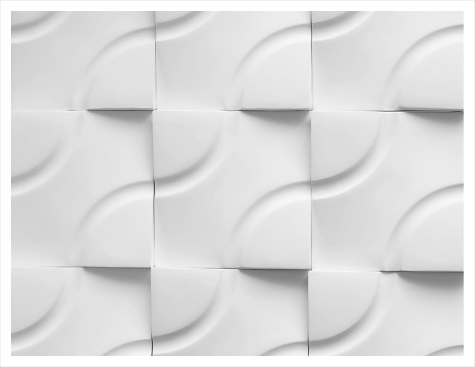

Hydratile
Hydratile is a modular ceramic tile that creates a multitude of graphic patterns and spatial forms to evoke literal and symbolic imagery of water.

Task
The task was to use ceramic slip-casting techniques to design an ceramic object within the design language of Jeffrey Beers International for a speculative use in the design of Estiatorio Milos.
Inspiration
I explored commonalities between Greece and Miami to develop a theme that could be appeciated by both cultures.
Water
The theme of water was chosen and explored to discover attributes that could be translated into ceramic form.Graphic Tile
This tile uses centered quarter-circles to create opportunities for contiguous curved grooves, regardless of orientation.Spatial Tile
This tile mimics water's spatial characteristics with rolling waves, creating gradient lighting effects.
Hydratile
Hydratile evokes water, both graphically and spatially. Each graphic pattern also has a unique spatial quality.
Application
The tiled surface can be applied to a multitude of surfaces within the Estiatorio Milos restaurant.
Digital Prototyping
Formal explorations using digital tools allowed for quick discovery of patterns to achieve the optimal balance of visual effect and manufacturability.Physical Prototyping
Paper models provided quick tangible explorations to determine the overall scale and depth of the grooves. The chosen design was 3D-printed in ABS plastic to serve as an original positive for the plaster mould.
Production
Using a single mould, initial tests determined optimal casting, drying, firing, methods. Once the process had been optimized, several moulds were created to produce a large number of tiles in a limited time period.
Glazing
Several glaze options and application techniques were explored.
Hydratile's modular design can create a multitude of patterns.

Glazed Stoneware: Bubbles
Glazed Stoneware: Rolling Undulations

Semi-Glazed Stoneware: Horizontal Wave

Semi-Glazed Stoneware: Cresting Wave

Glazed Porcelain: Choppy Water
Glazed Porcelain: Bunched Wave

Unglazed Porcelain: Diagonal Waves

Unglazed Porcelain: Fish Scales